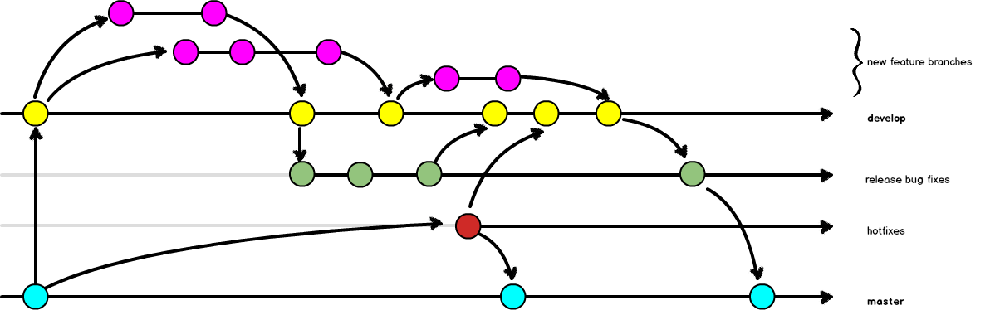
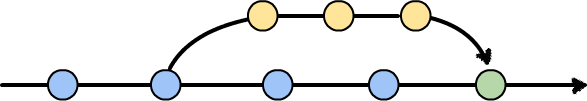

Scheduled Release

- Incorporates human-reviews, and possibly automated tests.
Allows you to collate many smaller changes into a single release.
Examples: Gitflow or Simplified Gitflow
Continuous Deployment

- Code is deployed faster than scheduled releases.
- Requires (trusted) test coverage.
- Typically uses a mechanical gatekeeper to check in code to the master branch.
- Fewer branches to maintain / keep updated.
Examples: Branch Per Feature or GitHub Flow - Hybrid: Squash Workflow